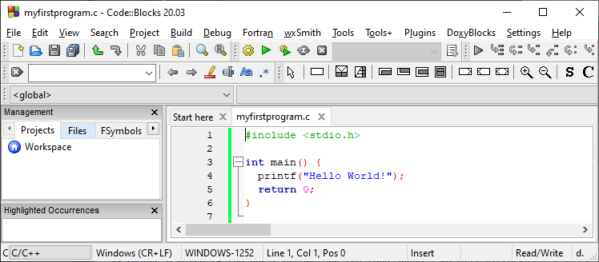
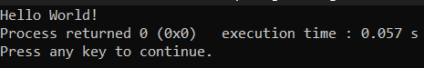

C is a general-purpose programming language created by Dennis Ritchie at the Bell Laboratories in 1972. It isa very popular language, despite being old. C is strongly associated with UNIX, as it was developed to write the UNIX operating system.
1) It is one of the most popular programming language in the world
2) If you know C, you will have no problem learning other popular programming languages such as
Java, Python, C++, C#, etc, as the syntax is similar
3) C is very fast, compared to other programming languages, like Java and Python
4) C is very versatile; it can be used in both applications and technologies
Let's create our first C file.
Open Codeblocks (you can open any other software as well) and go to File -> New -> Empty File.
Write the following C code and save the file as myfirstprogram.c (File -> Save)
#include< stdio.h>
int main()
{
printf("Hello World!");
return 0;
}
Don't worry if you don't understand the code above. For now, focus on how to run the code.
In Codeblocks, it should look like this:

Then, go to Build > Build and Run to run (execute) the program. The result will look something to this:

Congratulations! You have now written and executed your first C program.